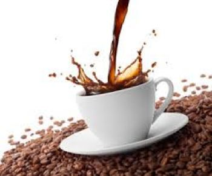

|

Кофе — напиток, изготавливаемый из жареных семян (зёрен) нескольких видов растений, относящихся к роду Кофе (Coffea) семейства Мареновые (Rubiaceae).
История кофе:
Согласно самой распространённой легенде, тонизирующие свойства кофе были открыты эфиопским пастухом по имени Калди, заметившим, что его козы, наевшись днем плотных листьев и темно-красных плодов кофейного дерева, начинают вести себя по ночам возбуждённо безо всякой очевидной причины. Он рассказал об этом странном случае настоятелю монастыря, и тот решил испробовать на себе действие необычных зёрен.
Настоятель был поражён силой воздействия напитка и, дабы поддержать бодрость монахов, засыпавших во время ночных молебнов, повелел им пить этот отвар. Впоследствии монахи научились обжаривать и молоть зёрна. Полученный напиток снимал усталость, давал свежие силы.
Открытие кофе относится приблизительно к 850 г. н. э., но полное признание его пришло много веков спустя. Первоначально в качестве тонизирующего средства употреблялся не отвар обжаренных зёрен, а непосредственно сырые кофейные ягоды. Чуть позже в Йемене начали готовить напиток из зрелой высушенной мякоти кофейного плода, получая напиток — «гешир» (он же кишр) — так называемый «белый йеменский кофе». Эфиопы были окончательно изгнаны с территории Аравийского полуострова в XI веке. За время их правления арабы переняли многое из самобытной и богатой культуры эфиопов, в том числе и привычку употреблять кофе. Вначале арабы готовили его способом, далёким от современного. Они давили кофейные зёрна и смешивали их с животным жиром и молоком. Из получившейся массы делали шарики, которые брали с собой в дорогу в качестве общеукрепляющего средства.
Лишь в XII веке из сырых кофейных зёрен стали готовить напиток, а ещё столетия спустя начали срывать плоды с кофейных деревьев, сушить зёрна, обжаривать и измельчать, а получившийся порошок заливать горячей водой. Арабы добавляли в него различные пряности — имбирь, корицу. Также смешивали напиток с молоком.
В 1475 году в Стамбуле был открыт первый специализированный кофейный магазин «Кива Хан». Также в Константинополе около 1555 года была открыта первая публичная кофейня. Историки утверждают, что всемогущий визирь Мехмед Кёпрюлю однажды переоделся простолюдином и отправился по кофейням, чтобы послушать, что говорят о власти. И, как оказалось, не услышал ни одного доброго слова, после чего царедворец велел закрыть все кофейни, а кофе запретить.
В Англии кофейни долгое время считались мужскими клубами, и в 1674 году женщины, недовольные тем, что мужей не вытащить из кофеен, написали «Женскую петицию против кофе».
В 1 686 году в Париже открылась кофейня «Le café Procope», и наступил настоящий кофейный бум.
В России кофе оказался при царе Алексее Михайловиче и служил средством от многих болезней, в том числе от мигрени. Однако именно обычай пить кофе связывают с именем Петра I. Он, по утверждениям историков, насильно поил «горьким пойлом» приближённых. В 1703 году был открыт первый кофейный дом.
В XVIII веке европейцы завезли саженцы кофейного дерева во многие тропические страны по всему миру. Кофе выращивается в 65 странах. Больше всего кофе производится в Бразилии (на её долю приходится около 40 % мирового производства кофе), Колумбии, Вьетнаме, Индонезии, Мексике, Индии и Эфиопии.
Растворимый кофе был изобретён и запатентован (патент № 3518) Дэвидом Стренгом из Новой Зеландии.
Декофеинизирование кофейных зерен было изобретено в 1903 году немцем Людвигом Роземусом. Сделать это открытие ему помог случай. Судно, перевозившее груз кофе, попало в сильный шторм, и трюмы были залиты морской водой до такой степени, что корабль с трудом оставался на плаву. Хозяин груза думал, что всё пропало, но на всякий случай решил отнести кофейные зерна на экспертизу. Эксперт Людвиг Роземус определил, что кофе в полном порядке, но потерял почти весь кофеин. Впоследствии удачливый немец запатентовал в США свою находку. Широкая известность к кофе без кофеина пришла в 1930 году.
|